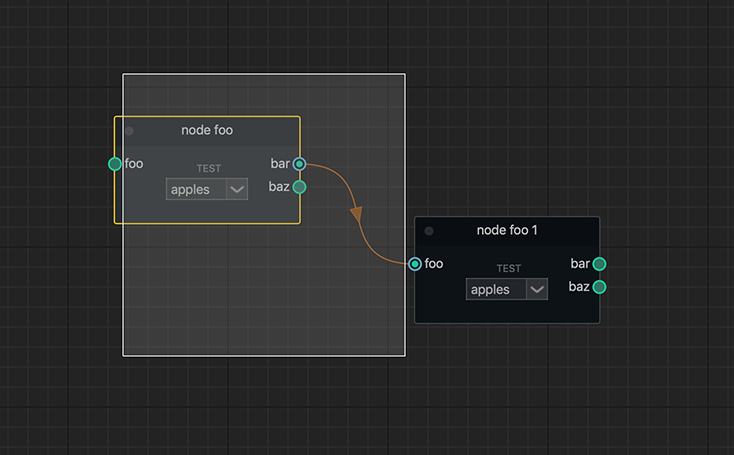

General Overview¶
User interface overview for the node graph.

Node Selection¶
Nodes can be selected/unselected with the selection marquee using LMB + Drag
Tab Search¶

Nodes registered in the node graph can be created with the tab search widget.
action |
hotkey |
|---|---|
Toggle Visibility |
|
Pipe Slicing¶

Connection pipes can be disconnected easily with the built in slice tool.
action |
controls |
|---|---|
Slice Connections |
|
- Additional Info:
To disable or enable the pipe slicer see
NodeGraphQt.NodeGraph.set_pipe_slicing()
Getting Started¶
Here’s a basic example snippet for creating two nodes and connecting them together.
1from Qt import QtWidgets
2from NodeGraphQt import NodeGraph, BaseNode
3
4
5# create a node class object inherited from BaseNode.
6class FooNode(BaseNode):
7
8 # unique node identifier domain.
9 __identifier__ = 'io.github.jchanvfx'
10
11 # initial default node name.
12 NODE_NAME = 'Foo Node'
13
14 def __init__(self):
15 super(FooNode, self).__init__()
16
17 # create an input port.
18 self.add_input('in', color=(180, 80, 0))
19
20 # create an output port.
21 self.add_output('out')
22
23
24if __name__ == '__main__':
25 app = QtWidgets.QApplication([])
26
27 # create node graph controller.
28 graph = NodeGraph()
29
30 # register the FooNode node class.
31 graph.register_node(FooNode)
32
33 # show the node graph widget.
34 graph_widget = graph.widget
35 graph_widget.show()
36
37 # create two nodes.
38 node_a = graph.create_node('io.github.jchanvfx.FooNode', name='node A')
39 node_b = graph.create_node('io.github.jchanvfx.FooNode', name='node B', pos=(300, 50))
40
41 # connect node_a to node_b
42 node_a.set_output(0, node_b.input(2))
43
44 app.exec_()
result: